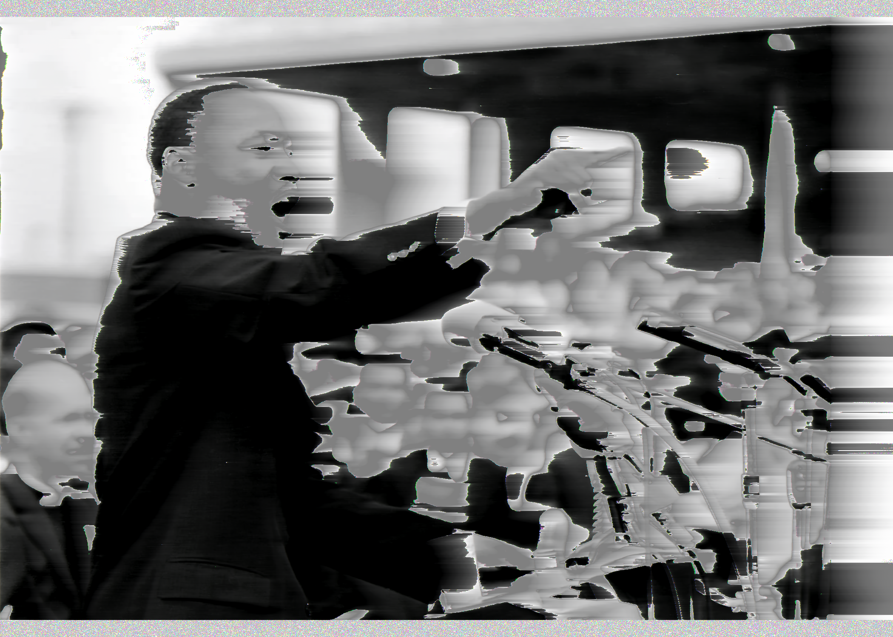
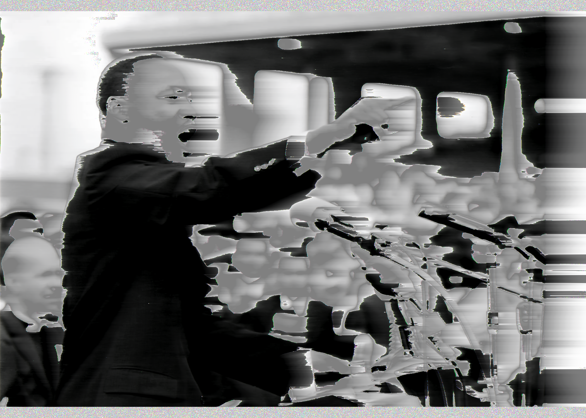
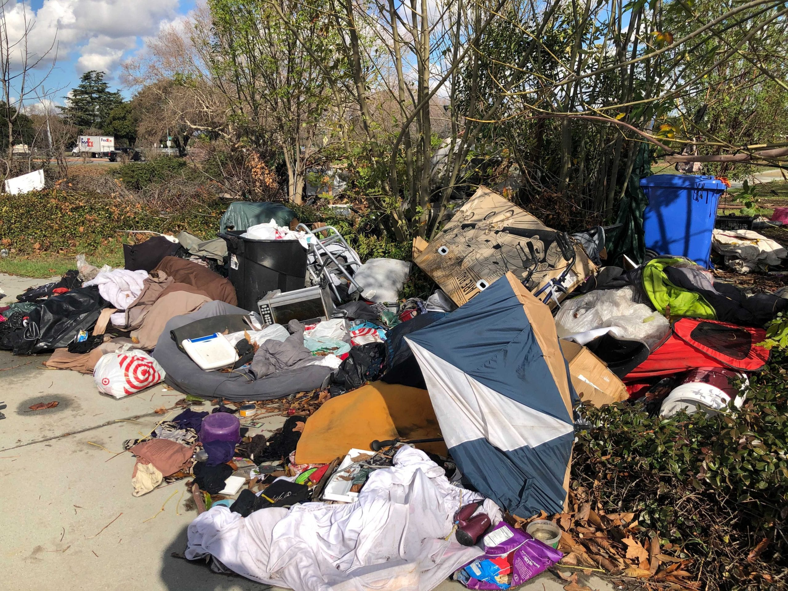
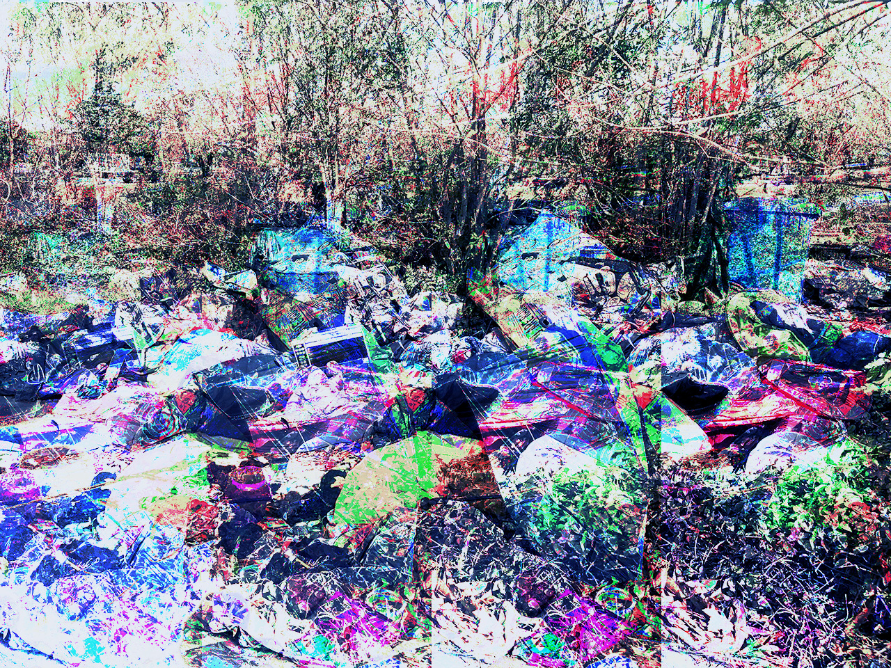

This was my first ever, Digital Media Class. This is the Glitch projects.

We had to take an image, open up the file to view the code, make some changes to the code, save it and check out what happened. I had no control over how to glitch the image or what the out come would be. The 1st image is the picture I got off the internet. The second image is bringing that same picture into an audio reading program and adding effects to the image. Since this was all so new to me I wanted to practice so I did a few more below.


This is an image of a kitten that I broght the file into note pad++ and added some curse words to the code. The second image is the outcome of glitching the image above.
 

With the BML movement happening in current society, I thought it would be interesting to glitch a picture of Martin Luther King Jr. giving his I had a dream speech from August 28,1963. He fought for equal human rights back in the 1960’s and now in the year 2023 we are still having an issue with race in our current society.
Ok Last One...
 
I took a picture off the internet of a homeless encampment and wanted to glitch the image. How a city with over a million people living in it and we can’t find the resources to home the homeless is astonishing to me. The fact that people die because they froze to death sleeping on the street seems so inhumane to me. There is a glitch in the system for this outcome to happen so therefore I present to you this San Jose trash pile glitched using the echo effect from a sound editor application.